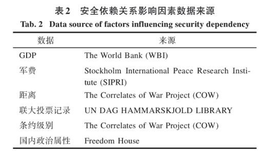
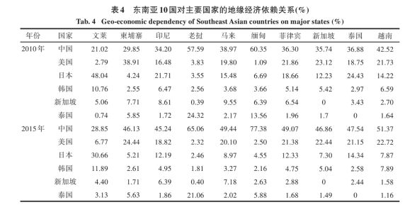

收录于合集

简 介
【作者 】 秦奇 ，中国科学院地理科学与资源研究所，中国科学院大学博士； 吴良，李飞，成升魁，张丹，陈晓鹏 ，中国科学院地理科学与资源研究所研究院。
【来源】 《地理学报》2018年第10期。
【 整理 】彭小朵
【 审核 】庞林立
内 容 提 要
在全球化背景下，考察国家间地缘关系需将其置于宏观地缘格局中。安全等传统地缘政治因素仍对世界格局的变化起着重要推动作用，不可忽视。鉴于此，本文构建了地缘系统视角下地缘关系分析框架，结合社会网络分析方法，定量研究冷战后东南亚地缘系统内地缘经济和地缘政治（安全）关系的整体与结构特征，测度系统内各国在经济和安全上的权力特征以及依赖关系，并初步探索东南亚地缘政治（安全）依赖关系形成机制。结果显示：①冷战后东南亚地缘系统内对东南亚10国地缘经济权力总和最高国家的转移路径是从日本到美国再到中国；对东南亚10国地缘政治（安全）权力总和最高的国家始终是美国，2005年以后中国跃居至第二位，但与美国还有明显差距。在地缘经济领域，东南亚国家总体上对中国的依赖水平最高；在地缘政治（安全）领域，东南亚各国对美国及其盟友英、法、德等国的依赖较高，中俄也不可忽视；“东南亚在经济上靠中国、安全上靠美国”的地缘政治论述可见一斑。②国家实力差异是产生安全依赖关系的根本动力；国家间地理距离可以调节安全依赖的具体方向；国家的政治地理属性差异是形成安全依赖和影响安全依赖程度的重要条件。
关 键 词
地缘关系；地缘系统；安全依赖机制；社会网络分析；东南亚
** ** ** ** 1 ** ** ** ** ** ** ** ** ** 、****************** 引言
冷战结束，两极秩序崩塌，世界地缘政治板块处于剧烈的变动重组过程中。中国的和平崛起成为改变世界地缘政治格局的重大事件； “一带一路”倡议的提出掀起了中国推动甚至引领全球化的浪潮。在上述双重背景下，开展地缘政治研究、为国家制定对外战略提供理论基础和智力支持成为当代中国地理学者的重大课题和历史使命。东南亚与中国山水相连、人文相近，是21世纪海上丝绸之路的起锚之地，是关乎中国核心利益的战略重点，也是全球主要力量展开地缘政治博弈的焦点地区。深入探究东南亚地缘规律，厘清域内外各国间地缘关系的亲疏冷热，分析中国与东南亚国家的地缘互动程度，进而制定中国的东南亚地缘战略，成为亟待解决的重要科学问题。
世界进入以政治多极化、经济全球化和区域一体化为标志的后冷战时期以来，传统领域的地缘政治研究空间受到压缩，批判性地缘政治学勃兴，国外学者们开始转向女权地缘政治、情感地缘政治、传媒地缘政治等新领域，地缘政治作为学术术语的内涵泛化。当前地理学视角下的地缘政治量化研究成果并不多见，部分学者探索了国家对外移民政策影响因素研究、跨境河流合作与冲突中的政治依存关系和地缘政治事件预测方法的构建等方面，也有学者应用空间计量经济学模型对外国驻美外交人员数量的影响因素进行分析。国外文献中对国家间地缘关系及其量化研究也较少关注。中国地缘政治研究有其自身特色：一方面，与世界同行，学者们跟进了批判性地缘政治学等新领域；另一方面，地缘政治研究始终是一门经邦济世之学、强调为国家大战略服务，以地缘环境研究兴起为标志，中国地理学界凭借地理学科独有的空间视角与计量手段对中国和平崛起过程中面临的复杂环境展开研究。当前，中国地理学视角下的地缘政治研究在特定区域内国家的地缘政治综合属性评价及其空间格局研究领域取得丰硕成果，而国家间地缘关系量化研究成果有限。就研究内容来看，地缘经济关系量化评价得到了一定的关注。传统的欧式距离区域经济属性差异分析方法被推广到国际尺度的地缘经济关系测度中；基于国家间相互依存的非对称性，利用双边贸易数据测度国家间地缘经济依赖关系也成为研究重点。由于数据不易获得和理论不足，地缘政治关系量化研究成果寥寥。当前研究中，通常采用国际关系理论中以事件计分思想构建的双边关系定量评价方法来测度国家间地缘政治关系。
在全球化背景下，当代国家间地缘关系必然处于相关国家和宏观地缘格局的影响之下，孤立地解析两国交往，意义有限；从美国重返亚太到乌克兰危机再到南海争端、萨德入韩，事实一再证明安全利益、意识形态等传统地缘政治因素引发的地缘博弈仍然是影响世界战略格局的重要因素，地缘关系、特别是地缘政治关系研究亟待推进。本文尝试构建地缘系统视角下的地缘关系分析框架；结合社会网络分析方法定量研究冷战后东南亚地缘系统内地缘经济、地缘政治（安全）关系的总体和结构特征，测算各国在地缘经济、政治（安全）上的权力特征和依赖关系；重点对比分析中国和守成大国美国与东南亚各国的地缘经济和政治（安全）关系；鉴于地缘政治（安全）关系研究相对薄弱，以东南亚地缘系统为例，探索地缘政治（安全）依赖关系形成机制。
** ** ** ** 2 ** ** ** ** ** ** ** ** ** 、****************** 研究方法与数据来源********
2.1 理论基础与研究方法
2.1.1 地缘关系与地缘系统 。 国内其他学科提及地缘关系时，泛指由于地理位置不同而形成的人与人之间不同的联系，类同于血缘关系、业缘关系。少数地理学者基于空间视角对地缘关系的内涵予以描述。这些研究有一个共识，即地缘关系是以地理要素为基础形成的国家或地区之间的联系（相互作用），它是地缘政治关系、地缘经济关系、地缘文化关系构成的总和。但该共识仅阐述了地缘关系的产生条件是地理因素，没有论及地缘关系的具体形态、亲疏程度等属性，而这才是地缘政治学更为关注的本质属性；同时也没有考虑到两国间地缘关系亲疏冷热会受到相关国家和宏观地缘格局的影响。
为此，本文提出地缘系统概念，并在地缘系统的概念框架内阐述地缘关系 。地缘系统是指在一定的时空范围内，由因地理、资源因素而发生政治、经济、文化等联系的多个地缘体相互作用而形成的复杂系统。地缘体是地缘系统内最基本的单元，是指占据一定空间和人口，具有独立政治、经济和文化功能的地理实体。 在不同时空条件下地缘体的具体形态各不相同，可以是部落、古代政权、殖民地、现代国家以及国际组织等。地缘关系是系统中地缘体间发生的相互作用、相互联系，是联结地缘体并使多个地缘体有机构成地缘系统的纽带，地缘关系的具体表现形式是地缘体之间不同形态的空间流，例如物质流、能量流、资金流、信息流和人力流等。分析空间流时，不仅要测度这些流的性质、数量、流向，更要关注地缘体凭借空间流对其他地缘体产生的影响力度或者依赖程度，后者才是地缘关系的本质。也就是说，对这些空间流的分析一定要将其统筹到地缘系统内加以考虑，要考虑相关地缘体和整个系统对它们的影响。不同的地缘体由于自身对外地缘关系特征的不同而在系统内起的作用、扮演的角色也不同；不同的地缘体也会因对外地缘关系的特征不同而发生集聚或疏离，从而改变地缘系统的内部结构。地缘系统、地缘体和地缘关系的逻辑关系如图1。
2.1.2 地缘系统视角下地缘关系分析框架的 **构建 ****** 地缘关系是以空间流为表征的地缘体间的相互联系，空间流是关系型数据而非传统的属性数据，需要采取新的理论方法进行分析。社会网络分析方法作为适用于分析关系数据的研究方法，它对关系的关注与地缘关系的研究思路十分契合；特别是针对网络的整体特征、结构特征以及单一节点的权力特征（这个权力是考虑了其他节点和整个网络对该节点影响后的权力）有一套严密的理论基础和分析规范，为分析地缘系统的总体态势、内部结构和地缘体在系统内的影响力提供了研究方法。应用社会网络分析方法解释地缘关系时，将地缘系统看作一个网络，地缘体（国家）是网络中不同的节点，地缘关系（空间流）则是节点之间连边的拓扑关系以及边的权重。
综上，本文提出基于社会网络分析方法的地缘系统视角下地缘关系分析框架如下： ①刻画地缘系统的整体特征。 应用网络密度指标描述地缘系统内整体上地缘关系的密切程度，借助网络结构熵指标衡量地缘系统内部的有序性。 ②关注地缘系统的内部结构。 利用核心—边缘结构指数解释地缘系统的结构特征，即考察地缘系统内地缘体基于地缘关系的集聚或疏离态势。 ③测度地缘体的权力和评价地缘体间的依赖关系。 应用Katz指数测度地缘体在地缘系统内的总权力和某地缘体a对另一地缘体b具有的权力。由此可以计算地缘体a对地缘体b具有的权力占系统内所有地缘体对地缘体b具有的权力总和的比例，该比值可以衡量地缘体b对地缘体a的依赖关系。
2.1.3 地缘政治（安全）依赖关系形成机制的假设 ******** 测算依赖关系后，有必要进一步对依赖关系的形成机制进行探讨。鉴于地缘政治关系研究的相对欠缺，本文着重对东南亚地缘系统内地缘政治（安全）依赖关系的形成机制进行探索。研究地缘政治（安全）依赖关系形成机制，需要剖析武器贸易流在空间中扩散并产生影响的过程，也就是要厘清扩散的动力、流向和制约条件等要素。
**本文认为： ①国家的体量和实力的差异是造成国家间安全依赖的根本动力。**两国的综合实力（军事实力）存在巨大差异时，强国的权力外溢，流向弱国，具体表现为弱国有从强国进口武器装备或寻求安全庇护的趋势；两国实力接近时，在安全领域形成紧密联系的动力不足。 ②地理要素对权力的流向和流量调节。 一般地，距离较近的国家，特别是邻国之间，有较多历史恩怨和现实争议；而距离较远的国家间较少有领土争议和历史恩怨，容易产生安全信任和依赖关系。 ③国家的政治地理属性差异可能成为形成安全依赖和影响安全依赖程度的重要条件。 国家的政治地理属性差异可以划分为全球、区域和国别3个尺度。全球尺度上，各国的国际战略利益取向、对待国际秩序和全球重大问题的态度存在差异。区域尺度上，国家之间加入的组织和条约的差异也是政治地理属性上的明显差异。在国别尺度上，国家政权组织形式和意识形态也是可以对安全依赖关系产生影响的政治地理属性。
如此，从上述逻辑中选取安全依赖关系的影响要素以及具体指标（表1），分析其对安全依赖关系的解释能力。
安全依赖关系和这些影响因素是以矩阵形式构成的关系型网络数据，因此常规的最小二乘法回归分析法不再适用，需利用二次迭代分配程序方法（Quadratic Assignment Procedure，QAP）来进行实证检验。
2.1.4 研究方法 结合研究目的，社会网络分析方法主要涉及网络密度、网络拓扑熵、核心—边缘结构检验、Katz指数、QAP分析等。
（1）网络密度
网络密度越大，表明网络节点之间联系越紧密。网络密度为网络中实际关系数量与理论最大关系数量的比值。公式为：
Δ=2L/ [g(g-1)] (1)
式中：L为网络中所有连线的数量；g为网络中所有节点的数量。
（2）网络拓扑熵
若网络随机连接，各节点的重要度大致相当，则网络无序；反之，网络中有少量高连通度的节点和大量低连通度的节点，节点的重要程度存在差异，则认为网络是有序的。网络拓扑熵用来度量网络的有序程度。
假设网络中节点的度为，度是指节点与其他节点连边的数量之和，则其重要度可定义为：
__= / (2)
网络拓扑熵为
__________ (3)
（3）核心—边缘结构检验
若网络中存在核心—边缘结构，说明网络中的精英成员发生集聚，联系密切；另一部分成员被边缘化，这些成员之间联系较少，并依赖精英集团；核心成员与边缘成员间不存在联系或存在少数联系。
对网络进行核心—边缘结构检验就是检验现实网络与理想核心边缘结构网络的相似程度。测算现实网络中各点间的核度乘积，以核度乘积为单元建立该现实网络的理想核心边缘结构网络：核度均较大的点对，其核度乘积自然就大，列入核心集团；一个核度较大而另一个核度小的点对，其乘积居中，位于半边缘集团中；核度都小的点对，其核度乘积也小，列入边缘集团。再测算现实网络与理想网络的相关系数，判定现实网络在多大概率上存在核心—边缘结构。
（4）Katz指数
通常认为节点的权力来源于它得到其他节点的直接联系的多少，但这没有考虑节点本身的体量、规模的大小；同时也未考虑到没有与该节点直接相连的节点也会通过间接联系对该节点产生影响。
分析间接关系，须考虑矩阵的幂次。关系矩阵的幂次计算了任意一对节点之间的不同长度的连接路径的数量。令网络原始关系矩阵为C，其中的单元为 __ ，表示节点对节点的选择关系；C的平方矩阵中，表示节点和之间长度为2的途径的数量；同理，表示从节点到节点之间的途径数量，更高幂次类似。矩阵C的每一列列向量的总和表示对应的节点到其他节点经过长度为1的路径选择的次数；C的平方矩阵中的每一列列向量的总和表示对应的节点到其他节点经过长度为2的路径选择的次数，其后依次类推。将C的各个幂次的矩阵相加，构造一个总的权力指数，该幂次和矩阵的每一列列向量的总和就是对应节点所具有的总权力。考虑到矩阵幂次越高，对总权力的贡献越小，需要引入一个衰减因子来刻画该趋势。设一常数a，若矩阵幂次为k，在该影响链条上衰减因子产生的影响就是ak。当a=0时完全衰减，a=1时无衰减。
令幂次和矩阵为T，则：阵为 T ，则:
则: T = aC + a 2 C 2 + ⋯ a k C k = = （ I- ac ） - 1 - I (4)
矩阵T的元素即为节点对节点具有的权力，其各列列总和=就是节点在网络中具有的总权力，而节点对节点的依赖关系则是/。令t表示/构成的列向量。经过推导，可求t：
t=as/I-a （5）
式中：a是衰减系数；s是原始关系矩阵C的各列的列总和所构成的列向量；I为单位矩阵；是原始关系矩阵C的逆矩阵。上述条件已知，可求矩阵t，即得到各节点的权力。
（5）QAP回归分析
QAP回归分析的目的是研究单一矩阵和多个矩阵之间的回归关系，并且针对判定系数R2的显著性进行评价。该过程分为两步。①针对自变量矩阵和因变量矩阵对应的长向量元素进行常规的多元回归统计分析；②对因变量矩阵的各行和各列同时进行随机置换，然后重新计算回归，保存所有的系数和判定系数R2。重复第②个步骤数百次，以便估计统计量的标准误。对于每个系数，QAP将计算出在全部随机置换的次数中，产生的系数大于或等于第①步计算得到的系数所占的随机比例。
2.2 数据来源与处理
2.2.1 研究对象界定 ******** 研究冷战后（1992年-至今）东南亚地缘系统内地缘经济、地缘政治关系，重点对比分析中美两国与东南亚各国的地缘经济和政治关系亲疏冷热态势。为此，在时间序列上选取1995年、2000年、2005年、2010年和2015年共5个时间截面上的数据进行研究。
研究的空间范围就是东南亚地缘系统的范围。东南亚地缘系统由东南亚国家（除东帝汶）和相关域外国家组成，共20个。东南亚包括文莱、柬埔寨、印度尼西亚、老挝、马来西亚、缅甸、菲律宾、新加坡、东帝汶、泰国和越南等11个国家。东帝汶独立不久，数据缺乏，且自身体量小，予以排除。域外国家主要是周边大国——中国、日本、韩国、澳大利亚和印度，还有在东南亚拥有巨大利益的美国、英国、法国、德国和俄罗斯，共10个。
2.2.2 指标选取与数据处理 地缘经济关系研究中，学者们通常以贸易流和贸易依赖来刻画地缘经济关系。本文同样选取贸易流来度量东南亚地缘经济关系。目前地缘政治研究通常采用阎学通等基于事件计分思想构建的双边关系定量评价方法来测算两国之间的地缘政治关系，但该方法存在值得商榷之处：①该方法的数据来源是人民日报和外交部网站上的两国外交事件，适用于评价中国与大国的双边关系；若评价除中国外的其他国家的双边关系，数据来源受限，且适用于中国与其外交伙伴间的评分标准也不适合其他国家。②该方法是将两国间的政治、经济和文化等外交事件分层次赋分累加，其评价结果在一定程度反映两国的双边关系，但与地理学语义下的地缘政治关系有一定差异。因此，需要找到一种与地缘经济关系研究类似的、能够使一国产生权力而令他国产生依赖的空间流来衡量地缘政治（安全）关系。武器贸易数据的代表性和易获取程度较好。两国间发生武器贸易，通常表明两国间战略互信水平高、在安全领域中合作与依赖程度也高。因此，本研究选取武器贸易数据来刻画地缘政治（安全）关系。
值得注意的是，常规贸易与武器贸易刻画地缘关系的方式不同。常规贸易双向对流，贸易总量是权力和依赖关系的来源；而武器是特殊的商品，一般单向流动，从军事科技水平高、军力强大的国家流向其他国家，也就是武器出口国从出口中取得对进口国的权力，进口国则对出口国产生依赖关系。因此，研究中贸易数据为双边贸易总量数据，武器贸易数据为出口数据。贸易数据主要来源于联合国贸易数据库（UN Comtarde Database），采用Correlates of War Project（COW）数据库中数据补充前者的缺失。通过比对，后者与前者基本相符，可以采信。因贸易伙伴间上报的数据不尽一致，本文对其进行对称标准化，若双方上报数据不一致，则取其平均值作为标准值；若一国上报数据缺失，则取另一国上报数据。从而得到1995年、2000年、2005年、2010年和2015年等5个时间截面上的20×20加权矩阵数据，据此展开东南亚地缘经济关系网络的整体特征和结构特征分析。武器贸易出口数据来源于SIPRI（Stockholm International Peace Research Institute）。与常规贸易数据不同，武器不是国计民生的必需品，每年交易数额波动很大，所以取5年累计量的平均值作为该时间截面的数据，得到5个20×20单向加权矩阵，依此进行地缘政治（安全）关系网络的整体特征和结构特征分析。
在地缘系统内度量某一国家对与它发生交往国家的权力时，既要考虑该国家的体量、规模的影响，又应考虑该国与他国的交往程度。因此，采用一国a的GDP对系统内20国的GDP总和的占比与该国a对某一国b的贸易额占某一国b的贸易总额的占比的乘积作为计算地缘经济权力的矩阵单元，由此构建5个20×20加权矩阵来计算地缘经济权力和地缘经济依赖关系。同时采用出口国a的军费对系统内20国军费总和的占比与出口国a对进口国b的武器出口额占进口国b的武器进口总额的占比的乘积作为计算地缘政治（安全）权力的矩阵单元，由此构建5个20×20加权矩阵来计算地缘政治（安全）权力和地缘政治（安全）依赖关系。地缘政治（安全）依赖关系影响因素数据来源如表2所示。

经济实力差异矩阵的构建 ：首先，将矩阵中每一单元设置为所在列国家的GDP与所在行国家的GDP之比。然后，对各单元中小于1的取其倒数进行替代，得到经济实力差异矩阵。经济实力差异矩阵的每一单元越趋近1表示两国经济实力接近，远离1代表两国经济实力差距较大。由于各单元的数值位数差距较大，取每单元的自然对数进行替代，可得标准化经济实力差异矩阵。
军事实力差异矩阵的构建 ：军力差异矩阵的构建过程与经济实力差异矩阵一致，只需将GDP替换为军费。得到5个时间序列上的标准化军力差异加权矩阵。缅甸、越南和柬埔寨等国少数年份的军费缺失，取前后3年的平均值计入。
距离矩阵的构建 ：COW数据库中给出了相邻国家间的距离。其划分标准是，如两国在陆上接壤或边界为界河，两国距离为1；两国之间海上距离在12海里以内，两国距离为2；两国之间海上距离在24～150海里之间，距离取值为3；两国海上距离在150到400海里之间，距离值为4，两国海上距离大于400海里，取值为5。以上是邻国间距离的划分，本文将两国之间海上距离大于400海里且非邻国的情况赋值为6。COW数据库给出了划分依据，12海里是一国领海的边界，24海里是两国领海不重叠的最低界限，150海里是船只一天内航行最远距离的平均值，400海里是两国海洋专属经济区不重叠的最低界限。由此构建距离加权矩阵。
联大投票相似度矩阵的构建 ：联合国大会投票表决时，各国投票有4类情况——赞成、弃权、反对以及缺失。比对两国的投票情况，当两国投票一致则记为0；当其中一国投票为赞成或反对，另一国为弃权，则将该情况记为1/2；当其中一个为赞成或反对，另一国为缺失时，另一国可能存在赞成、反对或弃权3种情况，核算其期望值为1/2；当一国为弃权，另一国缺失（存在赞成、反对和弃权3种情况），核算其期望值为1/3；当两国皆为缺失时，核算其期望值为1。用投票总次数减去各种情况的计数，再取其与投票总次数的比值，可得投票相似度。由此构建联大投票相似度加权矩阵。
条约等级关系矩阵的构建 ：COW数据库给出的两国条约级别有3种情况，共同防御条约、相互协商机制和中立及互不侵犯条约。本文将3种情况分别赋值3、2和1，由此构成条约等级加权矩阵。
国内政治差异度矩阵的构建 ：Freedom House数据库中给出了各国的公民自由和政治权利的综合指数，最自由为1，最不自由为7。尽管该指数可能存在一定意识形态偏见，但不失为一种衡量各国国内政治差异程度的指标。取两国自由指数差的绝对值作为矩阵中每一单元的数值。
** ** ** ** 3 ** ** ** ** 、******** 结果分析********
3.1 东南亚地缘经济与地缘政治（安全）关系
3.1.1 地缘关系整体特征
（1）网络密度。1995-2015年，东南亚地缘经济关系网络密度始终维持在较高水平，呈现出持续上升的趋势（图2），显示东南亚地缘系统内各国贸易往来越来越频繁，地缘经济联系越来越密切。东南亚安全关系网络密度一直处于较低水平，在时间序列上先升后降随后再次上升，该趋势与地缘经济关系网络的时序变化并不一致。这表明， 冷战后东南亚地缘系统内安全局势相对缓和，各国在安全领域投入不大， 2005年以后各国对安全领域的关注度有所回升。
（2）网络拓扑熵。东南亚地缘经济关系网络拓扑熵整体上很高，特别是2000年以后一直维持在0.8以上（图3）。说明东南亚地缘系统内地缘经济网络的无序性较高，特别是进入21世纪以后各国对外贸易能力普遍增强，去中心化趋势明显。安全关系网络拓扑熵整体水平较低，最高值不到0.5，且整体呈现下降趋势。这表明 东南亚地缘系统内安全关系网络的有序性较高，网络中影响力较高国家和较低国家差距明显。
3.1.2 地缘关系结构特征 地缘经济关系网络核心—边缘结构拟合相关系数E的整体水平很高（表3），最小值为0.885，说明 **东南亚地缘系统内的地缘经济关系中一直存在较明显的核心 —边缘结构。**地缘政治（安全）网络的核心—边缘结构拟合相关系数S的整体水平较低，核心—边缘结构不明显。
在地缘经济关系网络中，各国取向趋同，就是贸易利益最大化，容易产生聚集，存在贸易大国之间相互贸易交往更密切、贸易小国之间贸易联系疏远的趋势，也就具有了核心—边缘结构。在地缘政治（安全）网络中，各国的取向是自身安全利益，不会形成精英国家间联系紧密、小国间联系疏远的态势；且武器贸易大多单向流动，没有紧密对流，所以不易形成核心—边缘结构。
3.1.3 地 缘体的权力特征与依赖关系 （1）总权力。5个时间截面上，东南亚地缘系统内20国中在地缘经济关系网络中总权力排名前5位国家情况如图4所示。地缘经济总权力较高的国家有美国、中国、日本、德国、英国、韩国等国。 地缘经济总权力首位国家发生了从日本到美国再到中国的转移。
按时间顺序列出东南亚地缘系统内20国中在地缘政治（安全）关系网络中总权力排名前5位的国家如图5所示。 地缘政治（安全）总权力最高的国家始终是美国，具有无可撼动的绝对优势。中国、俄罗斯、德国、英国、法国也具有较高的总权力。
（2）对东南亚国家具有的权力。按时间顺序列出对东南亚10国地缘经济权力总和排名前5位的国家（图6）。 最高国家的转移路径是从日本到美国再到中国，域内国家新加坡、泰国以及域外的德国、韩国等国也对本地区具有较高的地缘经济权力。
按时间顺序列出对东南亚10国地缘政治（安全）权力总和排名前5位的国家（图7）。在5个时间截面上，美国始终是对东南亚地区安全权力总和最大的国家。2005年以后，随着经济实力和综合国力的迅速提升，中国对东南亚地区的安全权力总和大幅提升，跃居第2位，在2010年为超过美国在东南亚地区安全权力总和的1/3，开始对美国在东南亚安全领域的绝对领导地位构成威胁，于是美国启动了重返亚太战略。2015年结果表明，美国对东南亚的安全权力总和较2010年明显回升。
（3）依赖关系。列出东南亚各国对中国、美国、日本、韩国以及域内的新加坡、泰国等地缘经济权力较高国家的地缘经济依赖关系在2010年和2015年的分布（表4）。

2010年东南亚各国对中国的地缘经济依赖水平很高，中国在印度尼西亚、老挝、马来西亚、缅甸、菲律宾、新加坡、泰国和越南等8国都占据首位，日本和美国分别在文莱和柬埔寨占据首位；到2015年，除文莱（日本占据首位）以外，中国成为其余9国的地缘经济依赖首位国家。
同样列出东南亚各国对中、美、俄、英、法、德等地缘政治（安全）权力较高国家的地缘政治（安全）依赖关系在2010年和2015年的分布（表5）。中国在柬埔寨、老挝和缅甸有较大影响力，美国在文莱、菲律宾、新加坡和泰国占据优势，俄罗斯在越南的影响力是他国无法比拟的，而马来西亚和印度尼西亚的对外依赖关系则较为分散。
当前“东南亚在经济上靠中国，安全上靠美国”这一地缘政治论述盛行，政治学界用其来表述东南亚各国即希望搭上中国崛起的经济快车，又希望借助美国制衡中国的策略。通过分析2010和2015年中美两国在地缘经济和地缘政治（安全）两方面对东南亚各国的权力总和以及东南亚各国对中美的依赖关系，可以辨析该表述。 在地缘经济领域，东南亚各国对中国的依赖较高；在安全领域，美国对东南亚的影响力处于绝对优势，东南亚各国、特别是海洋地区各国对美国依赖较高，同时考虑到美国盟友英、法、德等国家也对东南亚保持了相当的影响力，可以说 “东南亚在经济上靠中国，安全上靠美国”的地缘政治论述不无道理。化解这一不利局面、提升中国与东南亚国家在安全领域的互信与交流水平，是中国当前对东南亚国家交往中的重要课题。
3.2 东南亚安全依赖关系形成机制初探
对安全依赖关系网络进行回归分析。因变量矩阵为安全依赖关系矩阵，自变量为经济实力差异矩阵、军力差异矩阵、距离矩阵、联合国大会投票相似度矩阵、双边条约等级矩阵和国内政治差异度矩阵。QAP方法优先适用于处理二值邻接矩阵，因此将加权矩阵处理成二值邻接矩阵。依据经验，设置经济实力差异矩阵的二值化临界值为1.5，军力差异矩阵为1.5，距离矩阵为5，联大投票相似度矩阵为80%，条约等级矩阵为1，国内政治差异度矩阵为1.5。
首次回归分析结果如表6所示。将不具有统计意义的自变量剔除，得到逐步回归结果（表7）。就逐步回归的结果来看，在时间序列上，各有效变量分别可以解释安全关系矩阵19.5%、20.8%、19.8%、21.9%和23.4%的变异。一般QAP回归分析的确定性系数比常规回归方法（最小二乘法）的要低。对比以往经验[31-32,34-38]，回归结果处于较优水平。在1995年，通过显著性水平检验的自变量分别是军力差异、距离和条约等级；2000年，通过检验的自变量为军力差异、联大投票相似度、条约等级和国内政治差异；2005年，军力差异、距离、条约等级和国内政治差异通过了显著性检验；2010年，则是军力差异、条约等级和国内政治差异；2015年，是经济实力差异、距离、条约等级和国内政治差异。
条约等级在历年都通过了显著性水平检验，国内政治差异、军力差异和距离也在大多数年份上通过了显著性水平检验。军力差异对安全依赖关系矩阵的影响是正向的，说明两国军事实力或军事科技能力差距较大时，存在弱国向强国寻求武器进口或向强国寻求安全庇护的可能性。距离对安全依赖关系矩阵的影响也是正向的，说明在一定程度上邻国之间安全依赖较少，距离远的国家之间则容易发生安全合作。一般邻国间存在较多的历史恩怨和现实争端，不易发生安全合作。条约等级对安全依赖关系的影响也是正向的，条约关系由低到高分为3个层次：互不侵犯条约、相互协商机制和共同防御条约，条约层次越高，安全依赖关系越深。国内政治差异程度对安全依赖关系的影响则是逆向的，表明国家的政治体制和意识形态接近，彼此更加信任，而差异较大的国家，在安全关系上不易建立信任。事实也证明，西方国家对不同政治体制和意识形态的国家是排斥的；在东方国家中，党际联系和传统友谊仍是维系两国关系的重要纽带。
经济实力差异和联合国大会投票相似度的统计意义较差。较强的经济实力并不能深刻影响一国在安全关系上对其他国家的权力，只有将其转化为综合实力或军事实力才有现实意义。联大投票相似度反映了各国在国际层面上的利益倾向以及对全球秩序和重大问题的看法的趋近程度。联大投票相似度并不对安全依赖关系具有较大的解释能力。一般投票相似度接近的国家，它们的全球观也趋近，应当说这有利于两国间安全互信的建立；但这些国家的国际分工和国家发展阶段处于相同的层次，易产生利益冲突，且这些国家一般在地理上毗邻、聚集，较多存在历史包袱和现实争端，彼此不易产生安全信任；另外，投票相似度接近的国家的军事科技水平和军事实力也接近，缺少发生武器贸易的势差。所以，联大投票相似度不能很好地解释安全依赖关系的形成。
军事实力差异、距离、条约等级和国内政治差异程度可以对国家间安全依赖关系的形成做出有效解释，该结果初步证实了本文对安全依赖关系形成机制的假设： 国家间实力差异是产生安全依赖的动力；国家间的距离远近调节安全依赖的具体方向；国家的政治地理属性差异是形成安全依赖和影响安全依赖程度的重要条件。
**
**
** ** ** ** 4 、 结论与讨论********
4.1 结论
（1） **冷战后东南亚地缘系统内地缘经济网络密度始终保持较高水平，各国经贸交往越来越密切；地缘政治（安全）网络密度较低，冷战后东南亚地缘系统内安全局势缓和，各国对安全领域投入不高， 2005年以来各国对安全领域的重视程度回暖。**通过计算网络拓扑熵，发现东南亚地缘系统内地缘经济关系网络的无序性较高，而地缘政治（安全）网络则较为有序。
（2） **冷战后东南亚地缘系统内的地缘经济关系中一直存在明显的核心 —边缘结构；地缘政治（安全）关系中则没有核心—边缘结构特征。**原因是在地缘经济上，各国取向是贸易利益最大化，存在贸易大国间交往密切、贸易小国间联系疏离的趋势。在地缘政治（安全）上，各国的取向是自身安全利益，不容易形成大国联系紧密、小国间联系疏离的态势；且武器贸易大多单向流动，无紧密对流。
（3）东南亚地缘系统内对东南亚10国地缘经济权力总和最高国家的转移路径是从日不可撼动的优势，2005年以后中国对东南亚国家的安全权力上升趋势明显，跃居第二位，但与美国仍有显著差距。 在地缘经济领域，东南亚国家对中国依赖最高；在地缘政治（安全）领域，东南亚各国对美国及英、法、德等盟友的依赖较高，另外中、俄也不可忽视。 因此，“东南亚在经济上靠中国、安全上靠美国”的地缘政治论述不无道理。
（4）本文对东南亚地缘政治（安全）依赖关系的形成机制进行初步探索，认为： 国家间实力差异是产生安全依赖关系的动力；国家间距离调节安全依赖的具体方向；国家的政治地理属性差异是形成安全依赖和影响安全依赖程度的重要条件。
4.2 讨论
本文采用贸易和武器贸易数据来测度地缘关系，受限于数据来源，诸如国家间投资、援助以及联合军事演习和军事人员互访等数据无法纳入研究。武器贸易数据较好地反映安全关系总体趋势、特别是小国对大国的依赖关系，但对小国之间的双边安全关系则反映不够，有待完善。另外，地缘关系包含地缘政治、地缘经济和地缘文化3个维度的关系，由于未能找到一种可以有效表征地缘文化关系的空间流数据，本文对东南亚地缘文化关系的分析不足。东南亚因独特的海陆复合地理环境，易受到域外力量的影响，历史上华人、印度人、穆斯林、欧美人纷至沓来，儒家文明、印度文明、伊斯兰文明、西方文明在此汇聚碰撞，深刻地塑造了东南亚地缘文化格局，最终形成了佛教、伊斯兰教和基督教三大宗教于此并存的局面。东南亚的地缘文化格局与关系典型且复杂，值得今后深入探究。
声明
此文为国政学人微信公众平台中文转载系列文章之一，由国政学人编辑，版权属杂志社。本文观点不代表本平台观点。欢迎转发分享，转载请务必注明来源。如有问题，请联系guozhengxueren@163.com
更多阅读
国政学人 （ID：guozhengxueren)
为方便学人及时阅读高质量文章
别忘把国政学人设置 星标 哦~